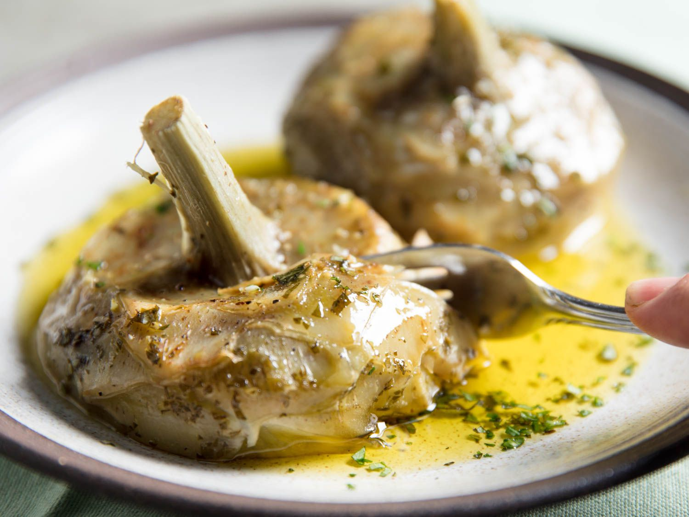

Artichoke Recipe

Description
Elegant Artichoke recipe for the perfect date night.
We going to be using only the highest quality ingredients to replicate the Mediterranean style dish
Ingredients
- 1 Artichoke
- 1 Lemon
- 2 tablespoons olive oil
- 1 tablespoon salt
- 2 table spoons of pepper
- 1 tablespoon garlic, minced
- 2 tablespoons fresh parsley
- 1 cup parmesan cheese
Directions
- Remove the stem of the artichoke. Cut about 1 inch (2 cm) off the top of the artichoke. Take a pair of kitchen scissors and snip off the thorns on the tip of the artichoke petals.
- Take half a lemon and rub lemon juice over the cut portion of the artichoke to prevent it from browning. Drizzle with olive oil and season with salt and pepper.
- Spread open the petals and rub minced garlic all over. Add the parsley and Parmesan; make sure to get it in between the petals. Top with more pepper if desired.
- Wrap the artichoke in aluminum foil. Bake at 425°F (220°C) for 1 hour and 20 minutes.
- When done, serve with extra parsley, lemon wedge and your favorite dipping sauce.
- Enjoy!